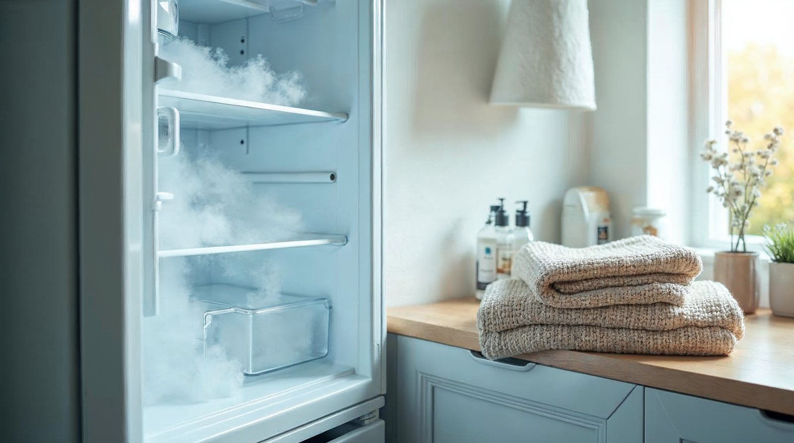
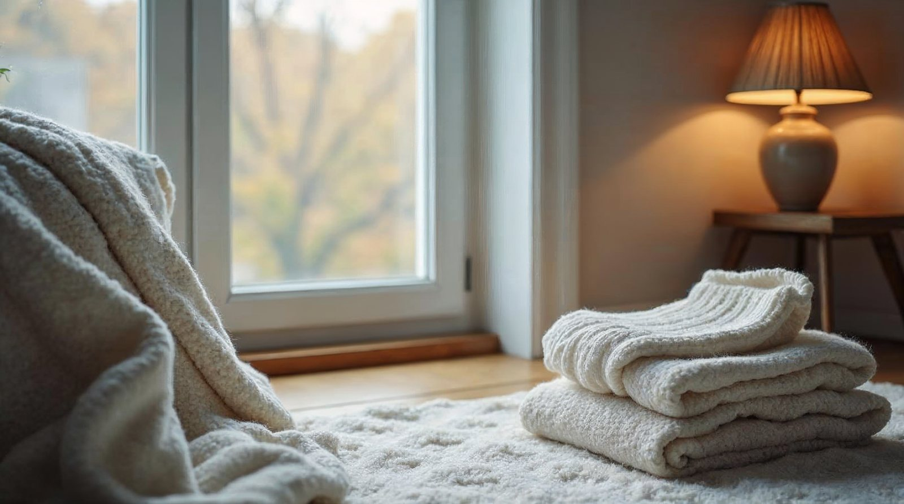
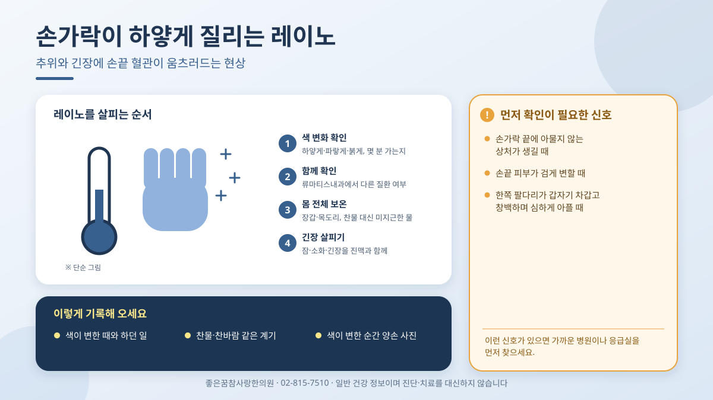

이종호 한의사 감수좋은꿈참사랑한의원 대표원장 (한의사 면허번호 19769)발행 2026-11-26 · 수정 2026-11-27
이 글의 차례
겨울 아침, 장을 보고 돌아와 찬물로 채소를 씻는데 손가락 두 개가 갑자기 하얗게 질려요. 핏기가 싹 빠진 것처럼 손끝이 밀랍 같은 색이 되고, 감각이 둔해지면서 저릿합니다. 잠시 뒤에는 보랏빛으로 변했다가, 따뜻한 방에 들어오면 붉게 달아오르며 화끈거리죠.
이런 일을 처음 겪으면 꽤 놀라세요. 손가락 색이 눈에 띄게 변하니 혹시 큰 병이 아닐까 걱정되기도 하고, 반대로 "원래 손이 차서 그래" 하고 넘기는 분도 있어요. 진료실에서 휴대폰에 찍어 둔 하얀 손가락 사진을 보여 주시며 이게 뭐냐고 물으시는 분도 계시고요. 그 사진, 저한테는 정말 반가운 자료예요.
손가락 색이 이렇게 몇 단계로 바뀌는 걸 레이노 현상이라고 불러요. 추위나 긴장에 손끝의 작은 혈관이 지나치게 움츠러들어 피가 잠시 잘 돌지 못하는 상태예요. 대부분은 다른 병 없이 체질처럼 나타나지만, 일부는 다른 질환과 함께 나타나기도 해서 확인이 필요해요.
그래서 저는 레이노 얘기가 나오면 두 가지를 나눠서 말씀드려요. 하나는 류마티스내과에서 다른 질환이 함께 있는지 확인해 보시라는 것, 다른 하나는 그와 나란히 몸을 따뜻하게 지키고 혈관을 놀라게 하는 일을 줄이는 생활을 함께 해 나가자는 거예요. 확인과 관리는 다른 얘기라, 둘 다 챙기셔야 하거든요.
레이노 현상은 어떤 모습인가요
레이노 현상의 가장 큰 특징은 손가락 색이 경계가 분명하게 변한다는 점입니다. 손가락 전체가 아니라 끝에서 한두 마디까지만 하얗게 질리고, 그 경계가 선을 그은 듯 또렷한 경우가 많습니다. 한 손가락에서 시작해 여러 손가락으로 번지기도 합니다.
색은 흔히 세 단계로 바뀝니다. 혈관이 움츠러들며 하얗게 질리고, 피가 고이면서 파랗거나 보랏빛이 되고, 다시 피가 돌기 시작하면 붉게 달아오릅니다. 모든 분에게 세 단계가 다 나타나는 것은 아니고, 하얗게 질렸다가 바로 붉어지는 분도 있습니다.
색이 변하는 동안에는 손끝이 차갑고 저리거나 감각이 둔해지고, 피가 다시 돌 때는 화끈거리거나 욱신거리기도 합니다. 손가락 말고 발가락, 귀, 코끝에 생기는 분도 있습니다. 대개 몇 분에서 수십 분 사이에 저절로 돌아옵니다.
왜 손끝 혈관이 이렇게 움츠러들까요
우리 몸은 추위를 느끼면 손발 끝의 혈관을 좁혀 몸 중심의 열을 지키려 합니다. 누구에게나 있는 자연스러운 반응입니다. 레이노 현상은 이 반응이 지나치게 크게, 너무 쉽게 일어나는 상태라고 볼 수 있습니다.
- 찬물에 손을 담그거나 냉동실에서 물건을 꺼낼 때
- 겨울 아침 찬바람을 맞거나 에어컨 바람을 오래 쐴 때
- 크게 긴장하거나 놀랐을 때
- 담배를 피우거나 간접흡연에 노출될 때
- 진동 공구를 오래 쓰는 일을 할 때
- 일부 감기약, 편두통약, 혈압약처럼 혈관을 좁히는 약을 드실 때
긴장이 방아쇠가 된다는 점은 놓치기 쉽습니다. 추운 날이 아닌데도 중요한 발표나 다툼이 있던 날 손끝이 하얘졌다면, 마음의 긴장이 혈관을 움츠러들게 한 것일 수 있습니다. 그래서 진료실에서는 언제 색이 변했는지와 함께 그때의 마음 상태도 여쭙습니다.
대부분의 레이노는 다른 병 없이 나타나는 일차성입니다. 젊은 여성에게 흔하고, 가족 가운데 비슷한 분이 있는 경우도 많습니다. 반면 다른 질환과 함께 나타나는 이차성 레이노는 비교적 늦은 나이에 처음 생기거나, 손끝에 상처가 생기거나, 한쪽에만 심하게 나타나는 경우가 많아 확인이 필요합니다.
수족냉증, 동상과는 어떻게 다를까요
손발이 차다는 점에서 레이노와 수족냉증은 비슷해 보이지만, 모습이 꽤 다릅니다. 수족냉증은 손발 전체가 늘 차갑게 느껴지는 상태이고, 색이 또렷하게 바뀌는 일은 드뭅니다. 레이노는 평소에는 괜찮다가 추위나 긴장을 만나면 손가락 일부가 갑자기 하얗게 질립니다.
동상은 영하의 추위에 오래 노출되어 피부와 조직이 실제로 얼어 손상된 상태입니다. 물집이 생기거나 피부가 검게 변할 수 있고, 따뜻해져도 바로 돌아오지 않습니다. 레이노는 따뜻해지면 몇 분에서 수십 분 안에 색이 돌아온다는 점이 다릅니다.
손발이 저리고 감각이 둔한 말초신경 문제는 색 변화 없이 저림과 화끈거림이 주로 나타나고, 추위와 상관없이 이어지는 경우가 많습니다. 다친 뒤 한쪽 손발이 타는 듯 아프고 색과 온도가 변하는 복합부위통증증후군은 다친 일이 먼저 있었다는 점에서 구분합니다.
함께 확인해 보면 좋은 것
레이노 현상이 처음 생겼다면 류마티스내과에서 한 번 확인해 보시길 권합니다. 손끝의 모세혈관을 들여다보는 검사나 혈액 검사로, 다른 질환이 함께 있는지를 살펴볼 수 있습니다. 대부분은 별다른 이상 없이 일차성으로 나오지만, 확인해 두면 마음이 한결 놓입니다.
특히 아래와 같은 경우에는 류마티스내과에서 확인해 보시는 것이 좋습니다. 관절이 붓고 아프거나, 손가락 피부가 단단하고 두꺼워지거나, 입과 눈이 유난히 마르거나, 피부에 붉은 반점이 생기거나, 삼키기가 어려워지는 경우입니다. 이런 단서는 진료실에서도 꼼꼼히 여쭙습니다.
검사 결과지가 있으시면 함께 가져와 주세요. 류마티스내과에서 약을 처방받으셨다면 약 이름과 드시는 시각도 알려 주시면, 한의원 진료 방향을 정할 때 참고가 됩니다.

일하는 환경에서 살펴볼 것
손을 많이 쓰는 일 가운데 레이노와 가까운 일이 있습니다. 착암기나 그라인더처럼 진동이 큰 공구를 오래 쓰는 일, 냉동 창고나 수산물처럼 찬 것을 맨손으로 다루는 일, 겨울 바깥에서 오래 서 있는 일이 대표적입니다. 이런 일을 하시는 분은 손끝 혈관이 날마다 시험을 받는 셈입니다.
일을 바꾸기는 어려우니, 일하는 방식 안에서 손끝을 지키는 방법을 찾습니다. 진동 공구를 쓸 때는 진동을 줄여 주는 장갑을 끼고 중간중간 손을 쉬게 하며, 찬 것을 다룰 때는 방수 장갑 안에 얇은 보온 장갑을 받쳐 끼시길 권합니다. 쉬는 시간에는 따뜻한 곳에서 손을 천천히 데워 주세요.
피아노나 타자처럼 손가락을 섬세하게 쓰는 일을 하시는 분은 손끝이 차가워지면 손놀림이 둔해져 불편이 더 크게 느껴집니다. 연주나 작업 전에 손을 미지근한 물에 잠시 담그거나 손목과 팔을 가볍게 돌려 몸을 데운 뒤 시작하시면 도움이 됩니다.
먼저 이렇게 여쭙니다
처음 오시면 저는 대략 이런 순서로 여쭙니다. 미리 생각해 오시면 진료 시간을 더 알차게 쓰실 수 있습니다.
- 손가락 색이 처음 변한 것은 언제였고, 어떤 상황이었나요?
- 하얗게, 파랗게, 붉게 가운데 어떤 색으로 변하나요? 몇 분이나 가나요?
- 어떤 손가락에 생기나요? 양손이 비슷한가요?
- 추위 말고 긴장할 때도 생기나요?
- 담배를 피우시나요? 드시는 약이나 영양제가 있나요?
- 관절 통증, 피부가 단단해지는 느낌, 입마름이 있나요?
손발 말고 몸 전체가 추위를 많이 타는지, 잠은 깊게 드시는지, 소화는 어떤지도 함께 여쭙습니다. 손끝의 차가움은 몸 전체의 온기와 긴장이 어떤지와 이어져 있는 경우가 많기 때문입니다.
일상에서 먼저 해 볼 수 있는 것
레이노는 혈관을 놀라게 하는 일을 줄이는 것이 생활 관리의 중심입니다. 손만 따뜻하게 하는 것보다 몸 전체를 따뜻하게 지키는 것이 손끝 혈관을 덜 움츠러들게 합니다.
- 외출할 때는 장갑과 목도리, 모자로 몸 전체를 따뜻하게 감싸기
- 찬물 대신 미지근한 물로 설거지와 손 씻기
- 냉동실이나 냉장고에서 물건을 꺼낼 때 장갑 끼기
- 담배는 끊고, 간접흡연도 피하기
- 카페인 음료는 양을 살펴 지나치지 않게 마시기
- 긴장되는 일이 있을 때 숨을 길게 내쉬며 어깨 힘 빼기
장갑은 손가락이 나뉜 것보다 벙어리장갑이 더 따뜻합니다. 손가락끼리 서로 온기를 나누기 때문입니다. 얇은 장갑 위에 벙어리장갑을 한 겹 더 끼는 방법도 좋고, 주머니에 손난로를 넣어 다니는 것도 도움이 됩니다. 양말도 한 켤레 더 챙겨 두세요.
손가락 색이 변하기 시작하면 따뜻한 곳으로 옮겨 손을 겨드랑이 사이에 끼우거나, 미지근한 물에 손을 담가 천천히 데워 주세요. 너무 뜨거운 물이나 난로에 바로 대면 감각이 둔해진 손끝이 데일 수 있습니다. 팔을 크게 돌려 피가 손끝까지 돌도록 하는 것도 방법입니다.
에어컨이 강한 사무실이나 마트 냉장 코너처럼 여름에도 찬 곳에 오래 머무는 분은 얇은 겉옷과 장갑을 챙겨 두시길 권합니다. 레이노는 겨울에만 생기는 것이 아니라, 갑자기 찬 공기를 만나는 순간이면 언제든 나타날 수 있습니다.
몸을 데우는 데는 움직임도 큰 몫을 합니다. 하루 종일 앉아 있으면 다리와 팔의 근육이 쉬면서 몸에서 만들어지는 열이 줄어듭니다. 한 시간에 한 번쯤 일어나 걷거나 계단을 오르내리고, 저녁에는 가볍게 걷는 시간을 만들어 보세요.
식사도 거르지 않으시는 것이 좋습니다. 끼니를 거르거나 지나치게 적게 먹으면 몸이 열을 만들 재료가 모자라 손발 끝부터 차가워지기 쉽습니다. 따뜻한 국이나 차를 곁들여 천천히 드시고, 찬 음료는 겨울철에는 조금 줄여 보세요.
한의원에서 함께 살필 수 있는 경우
레이노 현상이 다른 질환과 함께 나타나는지는 류마티스내과에서 확인하는 것이 먼저입니다. 한의원에서는 그와 나란히, 손끝 혈관이 쉽게 움츠러드는 몸의 바탕과 긴장, 온기를 함께 살핍니다.
- 손발이 늘 차고 추위를 많이 타며, 겨울마다 손가락 색이 자주 변하는 경우
- 긴장하거나 걱정이 많은 시기에 손끝 증상이 함께 심해지는 경우
- 잠이 얕고 소화가 더디며 몸이 쉽게 지치는 경우
- 목과 어깨가 늘 굳어 있고 손이 저린 느낌이 함께 있는 경우
- 생리 전후나 출산 뒤에 손발의 차가움이 더 심해진 경우
좋은꿈참사랑한의원에 오시면 모든 분의 맥을 먼저 짚고, 아래 '먼저 확인이 필요한' 신호가 없는지도 함께 봅니다. 그다음 손발과 배의 온도를 직접 확인하며, 잠과 소화, 대소변, 생리 주기, 마음의 긴장을 차례로 여쭙습니다. 목과 어깨가 굳어 있다면 직접 만져 보며 어느 자리가 불편한지 살핍니다.
진찰한 내용을 바탕으로 생활에서 바꿔 볼 것 하나와 함께 침, 추나, 한약 상담 가운데 지금 상태에 맞는 것을 정합니다. 한약을 상의할 때는 드시는 약을 모두 확인하고 신중하게 정합니다. 류마티스내과나 다른 병원에서 처방받은 약은 상의 없이 멈추지 않으시도록 안내합니다.
임신 중이시거나 임신을 준비 중이라면 먼저 알려 주세요. 한약과 다른 관리 모두 산부인과 선생님과 상의해서 정하는 것이 순서입니다.
이렇게 기록해 오시면 상담이 쉬워집니다
레이노는 진료실에 오시는 순간에는 잘 나타나지 않는 경우가 많습니다. 그래서 집과 일터에서 쌓은 기록이 가장 큰 단서가 됩니다. 한 달 정도만 간단히 적어 보세요.
- 손가락 색이 변한 날짜와 시각, 그때 하던 일
- 바깥 기온이나 찬물, 에어컨처럼 계기가 된 것
- 하얗게, 파랗게, 붉게 가운데 어떤 색으로 변했는지와 걸린 시간
- 색이 변한 순간의 사진
- 긴장하거나 잠을 설친 날 표시
사진은 양손을 나란히 놓고 찍으면 어떤 손가락에 생겼는지 한눈에 보입니다. 기록을 모아 보면 어떤 상황을 피하거나 대비해야 하는지가 또렷해집니다. 빠진 날이 있어도 괜찮으니, 생각날 때 한 줄씩만 적어 주세요.

겨울을 편안하게 나기 위해
겨울을 편안하게 나기 위해
레이노 현상은 손끝이 추위와 긴장에 조금 더 예민하게 반응하는 몸의 특성이에요. 사람마다 원래 그렇게 타고나는 부분이 있어요. 무섭게 여기기보다, 확인할 건 확인하고 손끝이 놀랄 일을 하나씩 줄여 가는 게 오래가는 방법이에요.
몸을 데우고 긴장을 살피는 건 제가 맡을게요. 대신 하나만 부탁드려요. 찬물 대신 미지근한 물로 손을 씻어 주세요. 딴 건 하시던 대로 편하게 하셔도 돼요.
다음에 오시면 그동안 손가락 색이 몇 번, 어떤 상황에서 변했는지부터 함께 살펴봐요. 궁금한 건 그때 편하게 물어보세요.
이런 증상은 먼저 확인이 필요합니다
- 손가락 끝에 아물지 않는 상처가 생기거나 피부가 검게 변하는 경우
- 한쪽 팔이나 다리가 갑자기 차갑고 창백해지며 심하게 아프고 감각이 떨어지는 경우
이런 신호가 있으면 한의원보다 가까운 병원이나 응급실을 먼저 찾으세요.
함께 읽으면 좋은 글
- 손발이 찬 수족냉증, 레이노·갑상선·빈혈과 어떻게 구분하나요?
- 손발이 저리고 차가울 때는 어떤 점을 먼저 확인하나요?
- 손발이 저린 것과 시린 것은 어떻게 다르게 설명하면 될까요?
- 겨울에 손발이 유난히 찰 때는 한의원에서 무엇을 살펴보나요?
- 다친 곳은 아물었는데 손발이 타는 듯 아프고 색과 온도가 변하는 복합부위통증증후군(CRPS)은 어떻게 살피나요?

여쭙는 것
- 손가락 색이 처음 변한 것은 언제였고, 어떤 상황이었나요?
- 하얗게, 파랗게, 붉게 가운데 어떤 색으로 변하나요? 몇 분이나 가나요?
- 어떤 손가락에 생기나요? 양손이 비슷한가요?
생활에서 해 볼 것
- 외출할 때는 장갑과 목도리, 모자로 몸 전체를 따뜻하게 감싸기
- 찬물 대신 미지근한 물로 설거지와 손 씻기
- 냉동실이나 냉장고에서 물건을 꺼낼 때 장갑 끼기
한의원에서 함께 살필 것
- 손발이 늘 차고 추위를 많이 타며, 겨울마다 손가락 색이 자주 변하는 경우
- 긴장하거나 걱정이 많은 시기에 손끝 증상이 함께 심해지는 경우
- 잠이 얕고 소화가 더디며 몸이 쉽게 지치는 경우
먼저 확인이 필요한 신호
- 손가락 끝에 아물지 않는 상처가 생기거나 피부가 검게 변하는 경우
- 한쪽 팔이나 다리가 갑자기 차갑고 창백해지며 심하게 아프고 감각이 떨어지는 경우
한눈에 보는 표
| 구분 | 핵심 |
|---|---|
| 여쭙는 것 | 손가락 색이 처음 변한 것은 언제였고, 어떤 상황이었나요? 하얗게, 파랗게, 붉게 가운데 어떤 색으로 변하나요? 몇 분이나 가나요? |
| 생활에서 해 볼 것 | 외출할 때는 장갑과 목도리, 모자로 몸 전체를 따뜻하게 감싸기 찬물 대신 미지근한 물로 설거지와 손 씻기 |
| 한의원에서 함께 살필 것 | 손발이 늘 차고 추위를 많이 타며, 겨울마다 손가락 색이 자주 변하는 경우 긴장하거나 걱정이 많은 시기에 손끝 증상이 함께 심해지는 경우 |
| 먼저 확인이 필요한 신호 | 손가락 끝에 아물지 않는 상처가 생기거나 피부가 검게 변하는 경우 한쪽 팔이나 다리가 갑자기 차갑고 창백해지며 심하게 아프고 감각이 떨어지는 경우 |
자주 묻는 질문
레이노 현상은 한의원에서 치료하나요?
다른 질환이 함께 있는지는 류마티스내과에서 먼저 확인하시길 권합니다. 한의원에서는 손발의 온기와 긴장, 잠과 소화처럼 손끝 혈관이 쉽게 움츠러드는 몸의 바탕을 함께 살핍니다.
손가락이 하얗게 되면 뜨거운 물에 담가도 되나요?
감각이 둔해진 손끝은 뜨거움을 늦게 느껴 데일 수 있습니다. 따뜻한 곳으로 옮겨 미지근한 물이나 겨드랑이 온기로 천천히 데워 주세요.
수족냉증과 레이노는 같은 건가요?
수족냉증은 손발 전체가 늘 찬 상태이고, 레이노는 추위나 긴장에 손가락 일부가 경계가 또렷하게 하얗게 질렸다가 돌아오는 상태입니다. 두 가지가 함께 있는 분도 있습니다.
커피를 마셔도 되나요?
카페인은 사람에 따라 손끝을 더 차게 느끼게 할 수 있습니다. 마신 날과 색이 변한 날을 함께 기록해 보시고, 연결이 보이면 양을 조금 줄여 보세요.
여름에도 생길 수 있나요?
에어컨 바람이나 냉장 코너처럼 갑자기 찬 공기를 만나면 여름에도 생길 수 있습니다. 찬 곳에 오래 머무신다면 얇은 겉옷과 장갑을 챙겨 두세요.
좋은꿈참사랑한의원은 재진 때 지난번 이야기부터 이어서 여쭙니다. 진료시간과 예약은 오시는 길에서 확인하세요.
어디서 상담받을 수 있나요?
좋은꿈참사랑한의원은 서울 동작구 만양로2길 2 신성빌딩 3층·5층(서울 동작구 상도동, 7호선 상도역 3번 출구 근처)에 있습니다. 한의사 3명(이종호 대표원장, 조영기 수석진료원장, 정원영 진료원장)이 진료합니다. 진료시간은 평일 09:30~20:00(점심 13:00~14:00), 토·일·공휴일 09:30~15:00이며, 방문 전 전화로 확인을 권합니다. 예약은 네이버 예약, 카카오톡 상담, 전화 02-815-7510로 받습니다.
이 글은 일반적인 건강 정보이며 개인의 진단이나 치료를 대신하지 않습니다. 증상이 있거나 복용 중인 약이 있다면 진료를 통해 확인하세요. 치료 효과는 개인마다 다를 수 있습니다.
작성 기준: 일반적으로 알려져 있는 건강 정보를 참고해 정리했습니다(대표원장 감수). 증상 기록은 1~2주 동안 하루 1회, 비슷한 시간에 적어 오시면 지난 상태와 비교하기 쉽습니다.